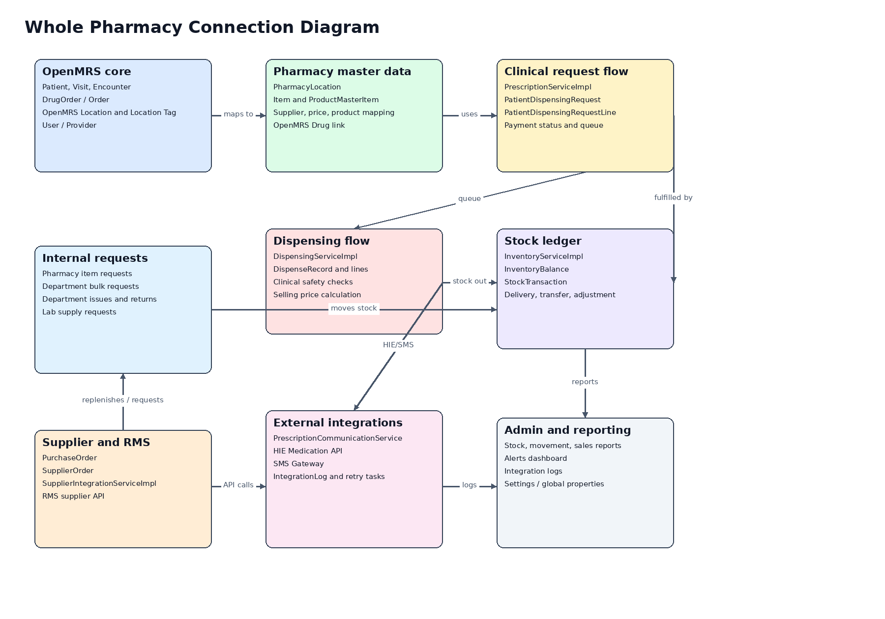
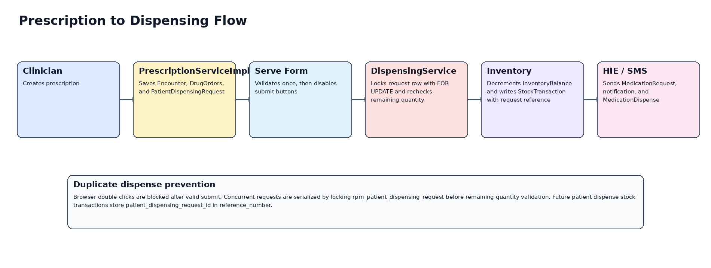
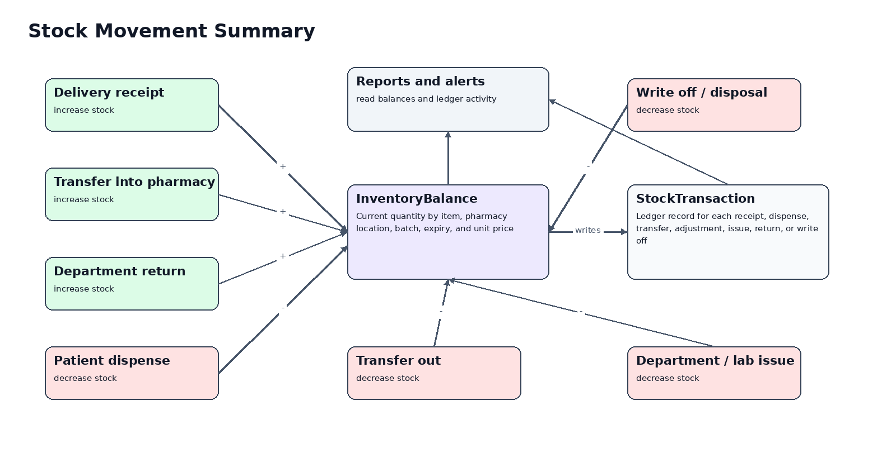

This document shows how the Rwanda Pharmacy Management module connects OpenMRS clinical records, pharmacy master data, dispensing, inventory, supplier/RMS integration, HIE, SMS, reporting, and settings.



PrescriptionServiceImpl creates OpenMRS encounters/orders and module dispensing requests.DispensingServiceImpl validates dispensing, applies safety/pricing, reduces stock, and records dispense transactions.InventoryServiceImpl receives deliveries, transfers stock, adjusts stock, and maintains InventoryBalance plus StockTransaction.SupplierIntegrationServiceImpl submits purchase orders and delivery confirmations to RMS.PrescriptionCommunicationService sends HIE and SMS messages and records integration logs.